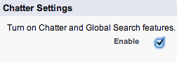

Prerequisites :
-
Before creating your first process plugin, it is assumed that the ESB framework has been installed in you development org.
Note : this requirement merely facilitates the visual testing of newly created ESB processes and nothing more.
(A fundamental principle of the Event Driven Architecture is a dependency reduced environment. For this reason, custom process plugins never take a dependency on the ESB framework.)
Custom Process Creation - Overview :
- In a development org , create a new public class
- Confirm that the class follows the expected ESB process plugin template as set out under Anatomy of a Process .
- Build appropriate unit tests as recommended by Salesforce.
Non-Callout Example :
- The
WireTapprocess is a built-in NOOP framework process that sends an email to an interested user whenever it receives an event message - The email contains details about the sequence step hosting the
WireTapprocess as well as the injected message parameters - As an alternative to the the
WireTapprocess, we will construct a new process calledChatterTap - Instead of emailing an interested user , the same detail will instead be surfaced on that user's chatter feed
Activity Specification :
- The activity specification is very similar to that of the
WireTap
(1) The activity has no side effects on processing, therefore return the untouched inbound event message as the only item in the returned output message collection
(2) The chatter feed that will surface details about the inbound event will be the chatter feed of a a specific user as defined by theUserIdfield of theChatterTapcustom setting
(3) If noUserIdhas been entered in theChatterTapcustom setting, use theIdof the running user context
Prerequisites :
- Create the custom setting to hold the
ChatterTapcustomization - ClickSetup|Develope|Custom Setting|New
Add a custom setting field to hold theUserIdof the chatter feed by clicking [New]


- Create a new VisualForce page called
ChatterTapHelp.
This page represents the mandatory help documentation supporting theChatterTapprocess plugin. - Confirm that chatter is enabled for your org. Click
Setup|Chatter|Settingsand check the enable box

-
Step 01
Create an Apex class that supports the minimum required plugin layout.
-
Notes :
- 001 : The class does not take a dependency on the ESB framework.
All methods, classes and properties must be described with theglobalkeyword. - 003 - 018 : a valid ESB plugin has two key elements, namely
an inner
Metaclass and aninvoke()method. - 003 - 006 : the inner
Metaclass exposes important properties about the ESB plugin thereby facilitating correct integration into the ESB framework.
TheDescriptionis the minimum requiredMetain order for the class to be recognised as a valid ESB plugin. - 009 - 018 : the
invoke()method contains the Apex logic.
The method takes a single event message, and returns a collection of zero, one or more output messages.
-
Step 02
Annotate the process.
-
Notes :
- 004 : The
Descriptionis a string that describes the functionality of the plugin. This value is surfaced on the processes list view by the ESB discovery process.
TheDescriptionis the minimum requiredMetain order for the class to be recognised as a valid ESB plugin. - 005 : The
Tagis a string that that groups the ESB plugin amongst similar plugins.
It is best practise to create your own category and use that for all your custom plugins.
Failure to include aTagproperty will group your plugin under the default "Untagged" group. - 006 : The
Nameis a string that describes the friendly name of the ESB plugin on the list view of the ESB processes.
The ESB framework will use the Apex class name of your plugin as the friendly name if you fail to include ths property in yourMeta. - 007 : the
Iconis a string that identifies the specific icon to display next to the plugin on the list view of the ESB processes.
Select an icon from the famfam icon collection that most closely represents the functionality of your plugin. Then note the name of the icon and assign it to theIconproperty.
The ESB framework will use a "cog" icon to represnet your plugin if you fail to include ths property in yourMeta. - 008 : the
HelpUrlis a string that defines the help page for the plugin. The help page is surfaced as a link on the list view of the ESB processes.
Either a VisualForce page reference or an external web page reference can be assigned to this property.
Note If this property is not defined, the ESB framework will surface a user friendly representation of your plugin by making use of the attributes contained within the plugin'sMeta.
-
Step 03
Formalise the invoke() method signature by- taking an input message of type
Map<String,Object>and - returning a collection of zero, one or more output messages of type
Map<String,Object>.
- taking an input message of type
-
Notes :
- 012 : the input message is injected into the
invoke()method in the form of a key-value collection. - 019 : the
invoke()method returns an output collection of zero, one or more messages.
-
Step 04
Wire-up plugin Custom Settings
Initiate the business logic implementation.
-
Notes :
- 015 - 022 : Under the
main code block, initiate the business logic implementation.
The specification defines the preferred chatter feed owner as being the User Id defined the custom settings of the plugin.
For this reason, the code referencesChatterTapSettings__cto determine if the default chatter (User) Id should been overwritten. - 009 : To surface a link to the custom settings page of your plugin directly on the ESB processes list view:
assign an instance of your custom setting SObject to the CustomSetting parameter of the plugin'sMetainner class.
-
Step 05
Complete the business logic implementation
-
Notes :
- 024 - 031 : Complete the implementation of the business specification.
In this example, the parameters surfaced to a given chatter feed are deliberately limited to the Sequence Name (esb_SequenceName) and Sequence Position (esb_Position).
-
Step 06
Test the plugin - tests will normally cover- the expected
Meta(for example, theDescription) - the expected initial state (for example, the Custom settings supporting the plugin)
- that expected exceptions are thrown for invalid initial state
- the expected outputs (for example, the count of the messages in the output collecton)
- the expected side effects (for example, the insertion of certain records such as a
FeedItem)
- the expected
- Most plugins will exhibit a set of tests similar to those shown below
-
Notes :
-
004 - 007 : Test the plugin correctly implements the inner
Metaclass - 011 - 023 : The plugin relies on a custom setting instance and should not throw an error if this custom setting exists
-
026 - 044 : The plugin should return exactly one message in the output collection.
As this is a no-operation plugin , the test could be further expanded to ensure that the parameters of the input message exactly match the parameters of the output message -
046 - 067 : The business intent of the plugin is to insert exactly one entry
containing details about the sequence and sequence position in a
given Chatter Feed.
The persistence of state outside the plugin is termed a side effect
The test verifies the correctness of the side effect by ensuring that plugin adds exactly one post to a given Chatter feed
Callout Example :
- The contents of a web page may need to be scraped and the content sent to one or more downstream processes.
- In this example, a callout process scrapes a web page and stores the content in a standard Salesforce document SObject.
- Salesforce requires that callouts execute before DML in any given execution context. For this reason, the ESB framework differentiates between "callout enabled" and "non-callout enabled" plugins.
- Since most plugins do not make callouts, the ESB framework assumes a plugin is "non-callout enabled" unless the Apex code that supports the plugin explicitly declares it's intention to make callouts.
- The example below demonstrates how to write a "callout enabled" plugin
Activity Specification :
- Retrieve web content that will be used by other downstream processes - specifically:
(1) - Retrieve the content of from the page located at bigass.force.com/eda
(2) - Store the page content
(3) - Facilitate downstream access to the content.
Prerequisites :
- Enable access to the web page by registering a new remote site.
ClickSecurity Controls | Remote Site Settings | New Remote Site.
Then enter the following details and clickSave -

-
Step 01
Create an Apex class that supports the minimum required plugin layout.
-
Notes :
- 001 : The class does not take a dependency on the ESB framework.
All methods, classes and properties must be described with theglobalkeyword. - 003 - 018 : a valid ESB plugin has two key elements, namely
an inner
Metaclass and aninvoke()method. - 003 - 006 : the inner
Metaclass exposes important properties about the ESB plugin thereby facilitating correct integration into the ESB framework.
TheDescriptionis the minimum requiredMetain order for the class to be recognised as a valid ESB plugin. - 009 - 018 : the
invoke()method contains the Apex logic.
The method takes a single event message, and returns a collection of zero, one or more output messages.
-
Step 02
Annotate the process (Part 1) - Callout functionality.
-
Notes :
- 001 : The intent of this ESB plugin is to make a callout.
Deliberately declare this intent by annotating the class signature with theDatabase.AllowsCalloutsinterface. - 003 : Any plugin annotated with the
Database.AllowsCalloutsinterface must simultaneously declare a global boolean member calledAllowsCallouts. - 014 - 017 : All callout logic must be contained within an
AllowsCallouts block. Furthermore, no DML should execute within this block.
(By explicitly separating the callout logic from DML execution via theAllowsCallouts block, the ESB framework is able to contractually support the Salesforce requirement that callouts must precede DML.)
-
Step 03
Annotate the process (Part 2) - Meta.
-
Notes :
- 006 : The
Descriptionis a string that describes the functionality of the plugin. This value is surfaced on the processes list view by the ESB discovery process.
TheDescriptionis the minimum requiredMetain order for the class to be recognised as a valid ESB plugin. - 007 : The
Tagis a string that that groups the ESB plugin amongst similar plugins.
It is best practise to create your own category and use that for all your custom plugins.
Failure to include aTagproperty will group your plugin under the default "Untagged" group. - 008 : The
Nameis a string that describes the friendly name of the ESB plugin on the list view of the ESB processes.
The ESB framework will use the Apex class name of your plugin as the friendly name if you fail to include ths property in yourMeta. - 009 : the
Iconis a string that identifies the specific icon to display next to the plugin on the list view of the ESB processes.
Select an icon from the famfam icon collection that most closely represents the functionality of your plugin. Then note the name of the icon and assign it to theIconproperty.
The ESB framework will use a "cog" icon to represnet your plugin if you fail to include ths property in yourMeta. - 010 : the
HelpUrlis a string that defines the help page for the plugin. The help page is surfaced as a link on the list view of the ESB processes.
Either a VisualForce page reference or an external web page reference can be assigned to this property.
Note If this property is not defined, the ESB framework will surface a user friendly representation of your plugin by making use of the attributes contained within the plugin'sMeta.
-
Step 04
Formalise the invoke() method signature by- taking an input message of type
Map<String,Object>and - returning a collection of zero, one or more output messages of type
Map<String,Object>.
- taking an input message of type
-
Notes :
- 013 : the input message is injected into the
invoke()method in the form of a key-value collection. - 024 : the
invoke()method returns an output collection of zero, one or more messages.
-
Step 05
Wire-up the callout logic
-
Notes :
- 017 - 027 : Implement the callout logic.
- The callout block must return null
- The callout block must never return the body of the callout response.
- The mechanism to communicate the callout body to the
main blockis detailed immediately below
- 013, 024 : All callout responses are communicated from the
callout blockto themain blockvia a user defined globalStringmember.
In this example, theStringmember is (arbitrarily) namedBodyand is assigned the content of the callout response.
In this way, the content ofBodyis now accessible to methods and variables inside themain block.
-
Step 06
Complete the implementation of the business logic
-
Notes :
- 033 - 040 : The
main blockcompletes the implementation of the business specification by the persisting the callout content in a standarddocumentSObject. - 017, 037 : The content of the callout response is retrieved from the
global member
Bodyand assigned to the body of thedocumentSObject. - 040 :
Idis a standard parameter of any message and it normally points to the underlying data (SObject)of the message.
Any plugin is free to update thisIdparameter to conform with the requirements of the plugin business specification.
In this example, the response content is persisted as a Salesforcedocumentand for that reason theIdparameter of the outbound message is updated with theIdof the inserted document. - 040, 012 - 014 : If a plugin modifies or adds a parameter on any outbound message, the modification should be formally described by detailing the parameter name and a comment describing the modification
 button
button{kind=link}